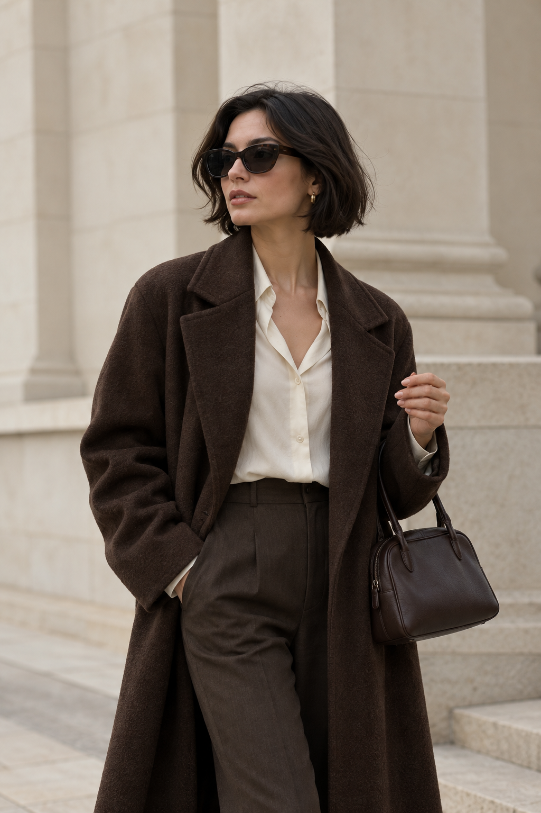

FW 2024 COLLECTION
PURELUXURY
 01 / THE EDIT
01 / THE EDIT
02 / THE PORTRAIT 03 / THE ATMOSPHERE
03 / THE ATMOSPHERETHREE IMAGES. ONE QUIET DIRECTION.
FW 2024 COLLECTION
01 / THE EDIT
02 / THE PORTRAIT03 / THE ATMOSPHERETHREE IMAGES. ONE QUIET DIRECTION.
THE EDITORIAL VIEW
点击任意照片，查看同一张完整影像。
返回保留原来的裁切、位置和页面滚动。